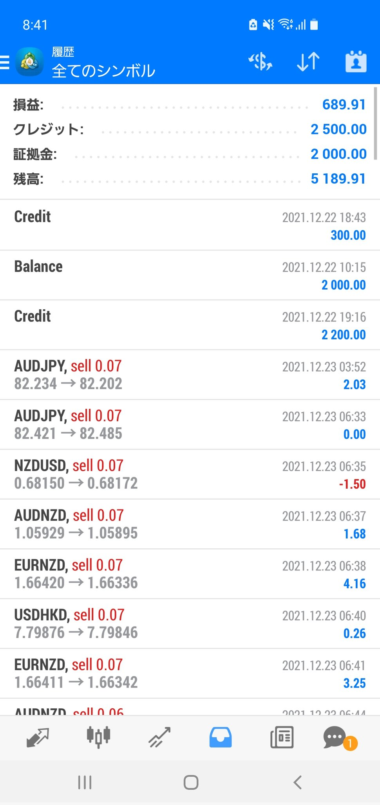
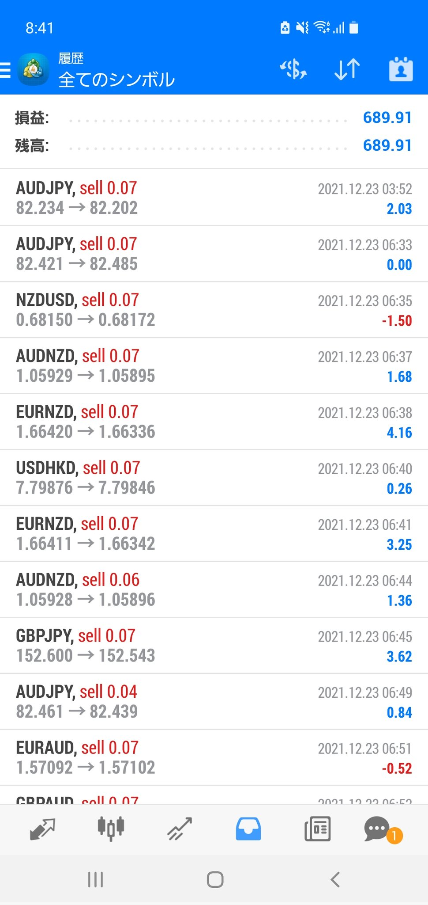
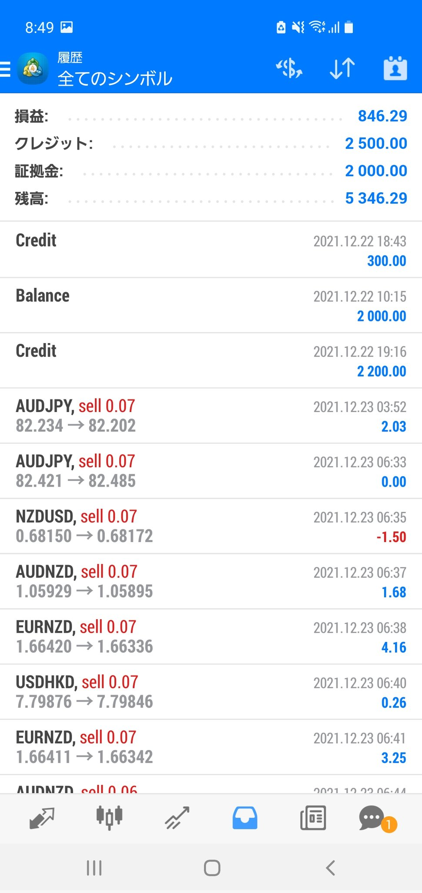
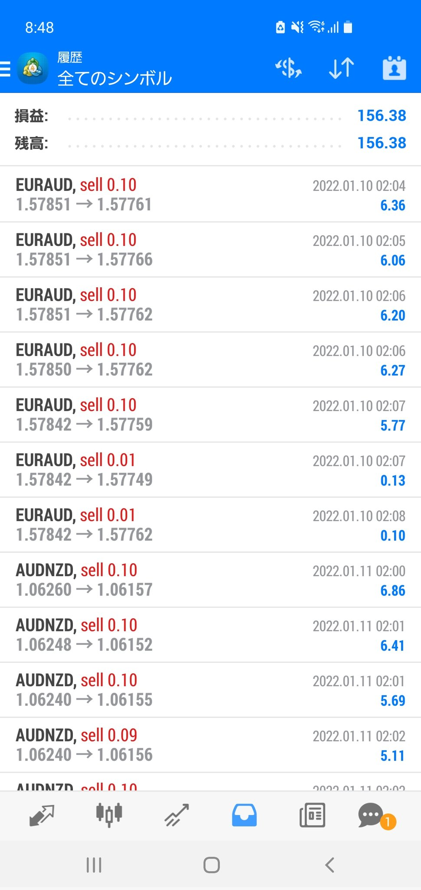
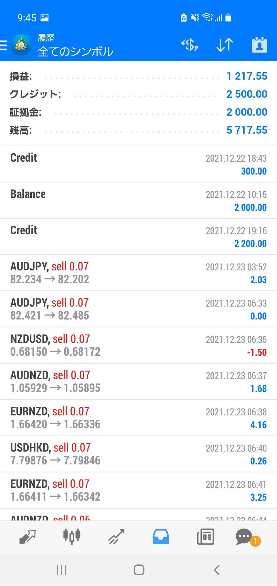
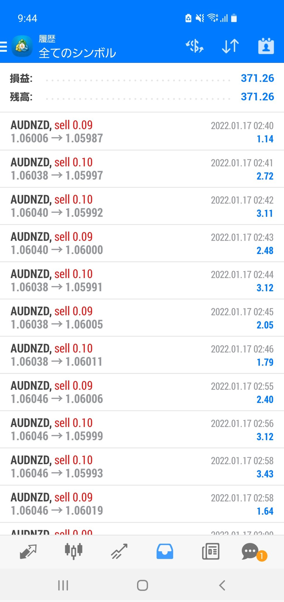

AI FX自動売買システム＋ミラートレード(MAM)で安定利益を実現！
はじめに
2022年2月現在すでに8名の方の申込をいただきありがとうございます！！！！
みんなそれぞれ利益を出して良い生活送れるといいですね(^^)
FXで利益を出したいという欲から裁量で取引をしたり、
様々な自動売買システムを試し
約300万程度の損失 を出してきました。
皆さんすでにわかっているかもしれませんが、
月利50% や過度な収益が得られるという広告は
基本的に詐欺まがいです。
確かに何度かはそれなりの利益になるシステムもいくつかあります。
しかし損失額が大きくなった日、月には
「今の相場がどうだ」など何かと理由をつけて
想定した利益を得ることができないどころか、
トータルすれば損失ばかりで、またいきなり大損となり、
利益がなくなるなど多々あります。
この辺りも含めて以下に詳細を記載するので
これから投資を始める方は
少しでもお役立てできれば嬉しいです。
経験談
その多くは 月利50%やナンピンの 自動売買システムです。
具体的なシステムについてですが、
動物シリーズはもう手を出さないことに決めました。
動物シリーズに限りませんが、 自動売買EA（ナンピン）は
しっかり自身で見極めて損切が出来ない限り、
一気に損失額が大きくなり、 ロストカットになりやすいです。
また動物シリーズの トレーダー裁量が入ったシステムについては
基本、嘘情報ばかりなのでもう信用しないことに決めています。

↑↑↑↑↑のようなシステムです↑↑↑↑↑
例えば
紹介広告１
：有名トレーダーNが監視している
全然知らない人がトレードしている：
実際１
紹介広告２
：5名体制で24時間監視している
いきなり体制が3名に変わったがユーザへの報告なし：
実際２
（「運営側も被害者だ！」という説明）
⇒実際は運営が匿っていた
など明らかおかしいことがあり、動物シリーズを検討している方は
小額から様子を見るか、よく検討するなどした方がいいかと思います。
私も動物シリーズで150万 ぐらい損失が出ています。
その他いくつか自動売買システムをやってきており、
現在もいくつか実施しています。
無料もありますが、月額料金が発生するものもあります。
色々やってみた経験としては
「無料だから惹かれやすい！」というのはありますが、
月額利用料が発生して、
ちゃんとした会社が運営しているシステムは
ある程度安定して利益を出してくれると思いました。
あくまで私の経験談です
ただし、システムを利用するために高額請求されるようなシステムには
お気を付けください (T T)
そこで今回は基本的に損失額が出ることもなく、
一番安定してコツコツ利益を重ねることが出来るシステムをご紹介いたします。
AI FX自動売買システム＋ミラートレード(MAM)
概要
株式会社Glorious investment が運営しているシステムで
Glorious investmentのメイン口座と
ユーザが作成する証券口座をサーバー上で紐付け、
メイン口座上で行われる売買取引をユーザの口座でも鏡合わせのように
同じ取引をするという運用手法です。
いわゆるMAM運用ですね。
（MAMとは、Multi Account Managerの略となります。直訳すれば、
複数のアカウントを管理・運用する人ということです。）
紐付けられたユーザ全ての方が揃って同じ方向の売買取引をするため、
利益率・損益率はユーザ全員全く同じものとなります。
※金額については証拠金残高によって異なりますが、利益率自体は皆同じです。
また、作成する自身の証券口座にて資金を運用するため、
Glorious investment が直接資金を預かることがないです。
そのほか特徴としては
・６ヶ月間、システム利用料無料
（７ヶ月目以降、システムのご利用には利用料金が掛かります。
・月利平均 10〜18%
・専属担当者による無料サポート
・低資金（5万円〜）から運用可能
・面倒なお手続き無く、自動的に複利運用
・証券会社はゼロカット制度採用（万一の際、追加証拠金制度無し）
・取引対象は為替・外国株・先物を複合運用
・経済指標などイベント時、
・トレーダーチームによるコピートレードを併用した取引も体験可能
『利益を取り残高が増す、残高を増資で増やす、ボーナスが増える』事により、
取引数量も併せて増えていくので、
増えれば増えるほど利益額も増えていくのでうれしい限りですね。
運営について
（グローリアスインベストメント）
という資産運用系の会社のようです。
ただし、自社でお金を管理しているわけではないので、
私が利用しているFXの自動売買システムでは他金融機関で口座作成して
そこでグロリアスが提供するシステムを利用し、
システム利用、口座運営をしていく感じになります。
まあ安定して自動で利益が出ているので、基本は入金、出金以外は利用してません！
会社サイトはこちら>>
利用している証券会社
UTOPIA FOREXという海外証券会社を利用しています。
ユートピアを調べてみると、悪評が載っていたりしました。。。
グロリアスに問い合わせたところ、
同名の会社を騙る運用実態等が存在しない企業が詐欺をやっているようで
グロリアスでも業務妨害を被るため、それなりの措置を取ってはいるようです。
実際に口コミでは出勤できないなどありましたが、
私は普通に入金も出金もできています。
証券会社が正当性を証明するライセンスについては
ユートピアは日本の金融庁ではライセンス登録しておらず、
海外のライセンスは取得していました。
（本当に取得しているかライセンス証をグロリアスの営業から見せてもらえました）
日本の金融庁でのライセンス登録をしていないのは、
レバレッジの制限やゼロカット制度を採用できなくなる為のようで、
このシステムに限らず、
いろんな自動売買システムが日本の金融庁に登録していないのは、
制限が厳しすぎて登録するメリットがないからのようです。
実際、日本の金融庁にライセンス登録しているのは
国内証券が提供している自動売買システムのみです。
そのため、【AI FX自動売買システム＋ミラートレード(MAM)】
を利用するためのユートピアは特に問題はなさそうな感じです。
ただそれでも不安に思われる方やまだ「怪しい」と思われる場合は、
私のツイッターで日次、週次で実績を公開しているので、
様子を見てもらってからの判断でもいいかもしれません。
私もいろんなシステムで大損しているので、
慎重になってもらうのはいいことかと思います！
私が気になったこと
グロリアスに問い合わせたところ、
通常の取引と同じくＡＩがマイナスに振れると判断した段階で決済をかけ
損切をするようです。
ロスカットも最大値で15%となった場合に発生するが、
ＡＩ取引で発生した事はありませんでした。
また基本デイトレードなので、含み損を抱えることもなく、
切り上げたいときにいつでも切り上げられるのが
他のシステムと比較して試してみてよかった点です！
私が思うメリット・デメリット
・5万円からの開始なので、少額で始めることができる
（自動売買システムは20万～など多いため）
・デイトレード方式のため、基本的に含み損が発生しない
・積み上げ方式なので利益やボーナスが増えるほど、
ポジションのロット数も増え利益額が増える
・AIによるデイトレードのため、
基本的にどんな相場（上昇局面、下降局面）でも安定して利益を出せる
・会社の営業が手取り足取りサポートしてくれる
今でも私はめっちゃ質問しています笑
【デメリット】
・AIが市場、情勢を判断しているため、
危ないと思った日はトレードせず利益が発生しない日がある
（※今のところそのような日はありませんが）
・概ね月利15%ぐらいになるよう設定されているため、
予定日利に達すると利益が取りやすい日でもそれ以上は同日内に取引しない場合が多い
（※例外あり）
・6か月目以降の利用は手数料もしくは月額費用が発生
その他細かいことはありますが、
私は継続してやってみる価値はあるかと思い、
まずは無料期間続け、それ以降も安定しているようであれば、
月額料金を払ってでも継続しようと思います。
実績！
開始額：450,000円（内ボーナス：250,000円）
利益：68,991円
利益率：15.3%
総保有額：518,991円
※添付はドル額で1ドル=100円換算
|  |  |
|---|
2022/1/10～2022/1/16の実績
開始額：518,991円（内ボーナス：250,000円）
利益：15,638円
週利：3%
総保有額：534,629円
※添付はドル額で1ドル=100円換算
|  |  |
|---|
2022/1/17～2022/1/22の実績
開始額：534,629円（内ボーナス：250,000円）
利益：37,126円
週利：6.9%
総保有額：571,755円
※添付はドル額で1ドル=100円換算
|  |  |
|---|
他期間の実績についても確認したい場合は、
私のtwitter をご確認いただければと思います。
上記でも記載した通り、
基本的にAIが毎日同じようなトレードをするため、
安定した日利となっています！！
始める際の特典
具体的には
・
(出資金+ボーナスで運用開始)
（例１：5万円入金 ⇒ 5万円+3万円分のボーナスで
・
(出資金と同額のボーナスを付与、付与のタイミングは自由にお選び頂けます)
（例２：10万円入金 ⇒ 10万円+10万円分のボーナスで
さらに私からの紹介特典とする場合は、
特典2の＋100％ボーナスに追加でさらに+10%上乗せさせることができます！
（例：10万円入金 ⇒ 10万円+11万円分のボーナスで
また上記期間以外のときでも
Glorious investment の担当営業に連絡することで
証券会社と調整をしてできる限りボーナス付与できるよう取り繕ってもらえます。
申込方法
Glorious investment の営業の方から連絡がいくようになります。
まとめ
もっと利益の出せるシステムもあるそうです。
ただ今までの経験上、
利益をたくさん出そうとするシステムは
大損するリスクも大きくなるので、
私的には毎日コツコツ安定して利益を出せればいいので、
特に利用しようとは思いません。
すごい余剰資金があれば別ですが...(^^;)
やってみたいけど、不安があったり他気になることがあるようでしたら
私のLINE公式アカウント
よりご連絡いただければと思います。